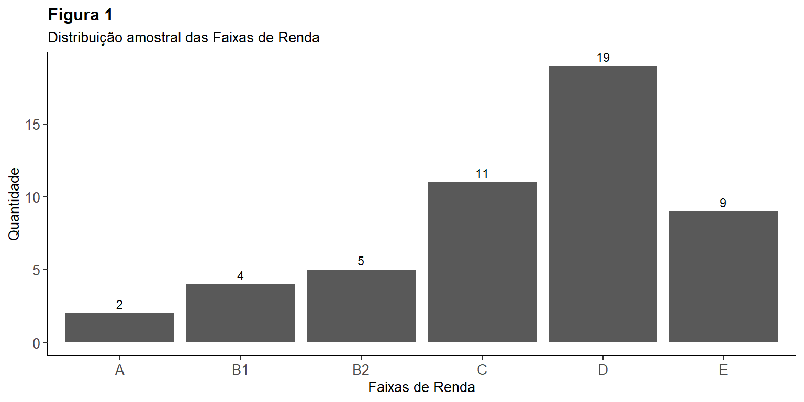

Introdução à Estatística
MBA Data Science & Analytics - USP ESALQ
Lista de Exercícios
Lista de documentos utilizados:
Slides F. de Estatística I, II e III 07,14 e 19.10.2022
Lista de Exercícios - Complementares
Lista de Exercícios - Complementares
Questão 1.
Na análise de concessão de empréstimos, uma variável potencialmente importante é a renda da pessoa. O gerente de um banco coleta uma base de dados de seus correntistas e extrai a variável “renda mensal (R$)” para 50 pessoas. Embora se trate de uma variável quantitativa, deseja realizar uma análise por meio de tabela de frequências. Neste sentido, pede-se:
a)
Classifique os correntistas em faixas de renda, sendo: 0-2.000; 2.001-4.000; 4.001- 6.000; 6.001-8.000; 8.001-10.000 e 10.001-12.000.
b)
Em seguida, elabore a tabela de frequências para as faixas de renda acima.
Code
bd1 |> group_by(fx_renda) |>
summarise(total = n()) |>
ggplot2::ggplot(aes(fx_renda, total)) +
geom_col() +
theme_classic() +
theme(axis.text=element_text(size=10), #change font size of axis text
axis.title=element_text(size=10), #change font size of axis titles
plot.title=element_text(size=12, face = "bold"), #change font size of plot title
legend.text=element_text(size=10), #change font size of legend text
legend.title=element_text(size=10),
plot.subtitle = element_text(size = 10)) + #change font size of legend title
geom_text(aes(label= total, vjust = -0.5), size = 3) +
ggtitle(label = "Figura 1", subtitle = "Distribuição amostral das Faixas de Renda") +
ylab("Quantidade") +
xlab("Faixas de Renda")
Questão 2.
Um analista do mercado acionário coletou os retornos mensais de duas ações que pretende indicar aos seus clientes. Calcule as estatísticas descritivas para as duas variáveis, incluindo o coeficiente de correlação entre os retornos. O banco de dados com os retornos percentuais mensais está na planilha Lista de Exercício Complementares: aba Exercício 2.
Estatísticas descritivas: média, mediana, moda, quartis, decis, valor mínimo, valor máximo, amplitude, variância, desvio padrão, erro padrão, coeficiente de variação
Code
mode_test <- function(x) {
d <- density(x)
d$x[which.max(d$y)]
}
bd2.1 <- bd2 |> select(2:3)
table2 <- as.data.frame(sapply(bd2.1, function(bd2.1)
c(media = mean(bd2.1),
mediana = median(bd2.1),
moda = mode_test(bd2.1),
min = min(bd2.1),
max = max(bd2.1),
variancia = var(bd2.1),
desvio_padrao = sd(bd2.1),
erro_padrao = sd(bd2.1)/sqrt(length(bd2.1)),
coef_var = sd(bd2.1) / mean(bd2.1) * 100,
amplitude = max(bd2.1) - min(bd2.1),
intervalo = quantile(bd2.1, probs = c(0,.1, .2, .25, .3, .4, .5,
.6, .7, .75, .8, .9, .95))
)))
table2 <- table2 |> mutate_if(is.character, as.numeric)|>
mutate_if(is.numeric, round_half_up, digits = 2)
table2 <- tibble::rownames_to_column(table2, "var")
rownames(table2) <- table2[,1]
# Transformando a tabela em um banco de dados. Fica mais fácil para plotar em gráficos
bd2.2 <- gather(table2, key = "Ação",
value = "Valor",
-var
)
bd2.2 <- bd2.2 |> transform(var = factor(var,
levels=c("min", "max", "media", "mediana", "moda", "variancia", "amplitude",
"coef_var", "desvio_padrao", "erro_padrao", "intervalo.0%",
"intervalo.10%", "intervalo.20%", "intervalo.25%",
"intervalo.30%", "intervalo.40%", "intervalo.50%",
"intervalo.60%", "intervalo.70%", "intervalo.75%",
"intervalo.80%", "intervalo.90%", "intervalo.95%")))
# bd2.2 |> mutate(ref = case_when(
# Valor >= 0 ~ "Positivo",
# Valor < 0 ~ "Negativo"
# )) |>
# mutate(acao = case_when(
# `Ação` == "acao_1" ~ "Ação 1",
# `Ação` == "acao_2" ~ "Ação 2"
# )) |>
# ggplot2::ggplot(aes(acao, Valor, fill = ref)) +
# geom_col() +
# scale_fill_manual(name = "Direção", values=c("#f46d43", "#74add1")) +
# facet_wrap(~(var), scales = "free", ncol = 5) +
# theme_bw() +
# theme(legend.position = "bottom") +
# coord_flip()
# bd2.2 |> glimpse()
# Plotando a tabela
table2 |> select(-1) |> kableExtra::kbl(caption = "Estatísticas Descritivas Ex. 2",
col.names = c("Ação 1", "Ação 2")) %>%
kableExtra::kable_classic(full_width = F, html_font = "Cambria")| Ação 1 | Ação 2 | |
|---|---|---|
| media | 0,04 | 0,15 |
| mediana | 0,04 | 0,12 |
| moda | 0,02 | 0,08 |
| min | -0,20 | -0,15 |
| max | 0,28 | 0,63 |
| variancia | 0,02 | 0,04 |
| desvio_padrao | 0,13 | 0,20 |
| erro_padrao | 0,03 | 0,04 |
| coef_var | 367,06 | 134,86 |
| amplitude | 0,48 | 0,78 |
| intervalo.0% | -0,20 | -0,15 |
| intervalo.10% | -0,11 | -0,09 |
| intervalo.20% | -0,07 | 0,02 |
| intervalo.25% | -0,06 | 0,02 |
| intervalo.30% | -0,04 | 0,03 |
| intervalo.40% | -0,01 | 0,07 |
| intervalo.50% | 0,04 | 0,12 |
| intervalo.60% | 0,06 | 0,17 |
| intervalo.70% | 0,09 | 0,21 |
| intervalo.75% | 0,12 | 0,23 |
| intervalo.80% | 0,13 | 0,26 |
| intervalo.90% | 0,22 | 0,43 |
| intervalo.95% | 0,24 | 0,54 |
Questão 3.
Em certo jogo, probabilidade de vitória (sucesso) a cada nova jogada é 1/6. Se forem feitas 10 jogadas, quais são as seguintes probabilidades:
a)
Ter vitória em 4 jogadas.
A fórmula a ser usada é a da Distribuição Normal (p. 44 dos slides)
b)
Ter vitória em pelo menos 7 jogadas
Code
k1 <- 7
k2 <- 8
k3 <- 9
k4 <- 10
# Aplicando a função
r1 <- janitor::round_half_up(dist_bin(n,k1,p)*100,4)
r2 <- janitor::round_half_up(dist_bin(n,k2,p)*100,4)
r3 <- janitor::round_half_up(dist_bin(n,k3,p)*100,4)
r4 <- janitor::round_half_up(dist_bin(n,k4,p)*100,4)
glue::glue({"Resposta:"}, {" "}, r1 + r2 + r3 + r4, {"%"})Resposta: 0.0268%Questão 4.
(Fonte Fávero e Belfiore, 2017 Cap. 5) Suponha que um aluno acerte três questões a cada cinco testes Seja X o número de tentativas até o décimo segundo acerto. Determine a probabilidade de que o aluno precise fazer 20 questões para acertar 12.
Nessa questão trabalharemos com Distribuião Binimial Negativa (DBN).
Quando pergunta sobre quantas rodadas e não sobre quantos acertos estamos diante de casos de DBN.
Veja agora uma coisa muito mais fácil. Existe uma função no R chamada dnbinomial.
Questão 5.
(Fonte Fávero e Belfiore, 2017 Cap. 5) Suponha que, em determinado hospital, 3 clientes são operados diariamente de cirurgia do estômago, seguindo uma distribuição Poisson. Calcule a probabilidade de que 28 clientes sejam operados na próxima semana (7 dias úteis).
Agora, um jeito muito mais fácil. Utilizamos a função dpois (R Native)
Questão 6.
Nos últimos meses, foram feitas medições do tempo decorrido entre o início e finalização de uma das etapas do processo de produção de certo produto. O tempo médio foi calculado em 26,5 minutos e o desvio padrão foi de 4,0 minutos. Sabendo que tal variável segue uma distribuição normal, identifique as seguintes informações:
Teremos que trabalhar com Z score
a)
P(X>37)
b)
P(X<20)
c)
P(22<X<28)
Code
p22 <- 22
p28 <- 28
z22 <- (p22-media)/sd
z28 <- (p28-media)/sd
p_a <- janitor::round_half_up(pnorm(p22, media, sd, lower.tail=TRUE),4) # Se é Menor que, temos que trabalhar com lower.tail.
p_b <- janitor::round_half_up(pnorm(p28, media, sd, lower.tail=FALSE),4)
glue::glue({"P(22<x<28) = "},p_b - p_a)P(22<x<28) = 0.2235Questão 7.
(Fonte Fávero e Belfiore, 2017 Cap. 8) Um grupo de 60 leitores fez uma avaliação de três livros de romance e, ao final, escolheram uma das três opções. Teste a hipótese nula de que não há diferença na preferência dos leitores, ao nível de significância de 5% (p < 0.05). Os dados estão disponíveis na planilha Lista de Exercício Complementares: aba Exercício 7.
Construindo a função para a estatística qui-quadrado (\(\chi^{2}\))
Realizando o teste de hipótese
Questão 8.
Foram coletados dados sobre a quantidade de chuva por dia (em milímetros), durante 14 dias, para dois locais distintos. O pesquisador notou que o local A aparenta ter maior variabilidade na quantidade chuva, comparativamente ao local B. Neste sentido, deseja testar a hipótese de que a variabilidade na quantidade de chuva é significativamente maior em A do que em B. Realize o teste F para testar tal hipótese.
Os dados estão disponíveis na planilha Lista de Exercício Complementares: aba Exercício 8.
Se é para analisar a variância, utilizaremos o teste da Distribuição F de Snedecor. Ver slide 62
Vamos importar os dados
Calculando a variância de A e B. Variância = \(\sigma^{2}\) / Variância amotral = \(s^{2}\), em que \(\sigma\) é o desvio padrão. Então a variância é o desvio padrão ao quadrado.
Code
var_a <- var(bd8$local_a_mm)
var_b <- var(bd8$local_b_mm)
# Testando diretamente sem precisar calcular a variância de cada variável
var_test1 <- var.test(bd8$local_a_mm, bd8$local_b_mm,
alternative = c("greater"))
glue::glue({"O F-test foi de:"}, {" "}, janitor::round_half_up(var_test1$statistic[[1]],4))O F-test foi de: 2.7612O p-valor foi de: 0.0392Perceba que o resultado acima bate com a planilha do Excel. Isso significa que o professor utilizou o F-test unicaudal (greater).
Vamos testar o bicauda.
Code
O F-test foi de: 2.761O p-valor foi de: 0.078Perceba que a estatística F é igual em ambos os testes (2,7611813). O que muda são os p-valores. PErceba que no teste unicaudal o p-valor é a metade do p-valor do teste bicaudal (0,03917 e 0,07834). Nesse caso eu prefiro fazer o teste bicaudal por ele ser mais conservador, ou seja, ele nos dá mais certeza se realmente podemos rejeitar a hipótese nula (H0) em favor da alternativa. O teste bicaudal é recomendado quando queremos testar se há diferença, sem especificar, se essa diferença é para mais ou para menos. Como o exercício pede para testar se a variabilidade no local A é maior do que no local B, podemos usar o teste unicaudal.
Vamos plotar para ver qual área representa um diferença estatisticamente significante?
Perceba que o valor F = 2.58 representa o valor crítico. No Excel está 2.577. Então, toda a área colorida representa os valores de F para diferenças esttisticamente significantes.
Questão 9.
(Fonte Fávero e Belfiore, 2017 Cap. 7) Deseja-se comparar o tempo médio de espera para atendimento (min) em 2 hospitais. Para isso, coletou-se uma amostra com 20 pacientes em cada hospital. Verifique se há diferenças entre os tempos médios de espera nos dois hospitais. Considere \(\alpha = 1\). Adicionalmente, calcule os intervalos de confiança para o tempo médio de espera nos dois hospitais. Os dados estão disponíveis na planilha Lista de Exercício Complementares: aba Exercício 9.
O exercício começa pela estatística F.
Code
O F-test foi de: 1.423O p-valor foi de: 0.225Perceba que o resultado não é estatisticamente significante.
Com o F-teste não podemos rejeitar H0 em favor de H1.
Passo agora a trabalhar com a estatística t (t-test). Lembrando que o teste-t para amostras com duas variâncias distintas precisa ser especificado o var-equal.
Code
O t-test foi de: 6.921O p-valor foi de: 0Com o t-teste podemos rejeitar H0 em favor de H1.
Calculando os intervalos de confiança rapidamente
Code
O intervalo de confiança para o Hospital 1 foi de: 76.96 - 86.04Code
O intervalo de confiança para o Hospital 2 foi de: 54 - 61.6Calculando os intervalos de confiança manualmente
Code
mean_value_h1 <- mean(bd9$hospital_1)
mean_value_h2 <- mean(bd9$hospital_2)
# Compute the size
n <- length(bd9$hospital_1)
# Find the standard deviation
standard_deviation_h1 <- sd(bd9$hospital_1)
standard_deviation_h2 <- sd(bd9$hospital_2)
# Find the standard error
standard_error_h1 <- standard_deviation_h1 / sqrt(n)
standard_error_h2 <- standard_deviation_h2 / sqrt(n)
alpha = 0.1
degrees_of_freedom = n - 1
t_score = qt(p=alpha/2, df=degrees_of_freedom, lower.tail=F)
margin_error_h1 <- t_score * standard_error_h1
margin_error_h2 <- t_score * standard_error_h2
# Calculating lower bound and upper bound
lower_bound_h1 <- mean_value_h1 - margin_error_h1
upper_bound_h1 <- mean_value_h1 + margin_error_h1
lower_bound_h2 <- mean_value_h2 - margin_error_h2
upper_bound_h2 <- mean_value_h2 + margin_error_h2
# Print the confidence interval
print(c(lower_bound_h1,upper_bound_h1))
print(c(lower_bound_h2,upper_bound_h2))Questão 10.
(Fonte Fávero e Belfiore, 2017 Cap. 7) Um fabricante de iogurtes desnatados afirma que a quantidade de calorias em cada pote é 60 cal. Para verificar se essa informação procede, uma amostra aleatória com 36 potes é coletada, observando-se que a quantidade média de calorias é de 65 cal com desvio padrão 3,5. Aplique o teste adequado e verifique se a afirmação do fabricante é verdadeira, considerando o nível de significância de 5%.
Code
[1] 4,06713e-10Code
# Encontrando o valor crítico. Vamos dividir conf por 2 porque é um teste bicaudal. Se estamos falando de 95% de confiança em um teste bicaudal, então precisamos considerar os dois lados da curva. Portanto, precisamos calcular 0.05/2. Isso quer dizer que estamos considerando 0.025 de uma lado e 0.025 do outro.
critico <- formatC(qt(p = conf/2 , df = n_amos-1, lower.tail = F)) Resposta: como o valor calculado para a estatística t está na região crítica (8.571), rejeita-se a hipótese nula de que as quantidades de calorias são iguais.
Questão 11
Em uma indústria alimentícia, para a preparação de certo produto, a quantidade padrão de sal são 8g com desvio padrão igual a 1 g. Na análise de uma amostra de 85 produtos, foi observada uma quantidade média de sal de 8,25g. Avalie se a quantidade observada na amostra pode ser considerada estatisticamente maior, ao nível de significância de 5%.
Code
[1] 0,01181997Code
# Encontrando o valor crítico. Vamos dividir conf por 2 porque é um teste bicaudal. Se estamos falando de 95% de confiança em um teste bicaudal, então precisamos considerar os dois lados da curva. Portanto, precisamos calcular 0.05/2. Isso quer dizer que estamos considerando 0.025 de uma lado e 0.025 do outro.
critico <- qnorm(p=.95)
critico[1] 1,644854Resposta: como o valor calculado para a estatística t está na região crítica (2.305), rejeita-se a hipótese nula de que as quantidades de calorias são iguais.
Questão 12
Em uma amostra de 425 medições, observou se que o peso médio dos produtos que foram medidos é 226 g, com desvio padrão de 10 g. Estabeleça o intervalo de confiança para esta média, sabendo que o desvio padrão observado é exatamente seu valor histórico Considere um nível de confiança de 95%.
Se temos uma amostra “grande” e com variância conhecida, utilizaremos a tabela de distribuição \(Z\) e não \(t\). Lembrando: variância = (desvio padrão)².
Resposta: O valor mais baixo é: 225,05. O valor mais alto é: 226,95.